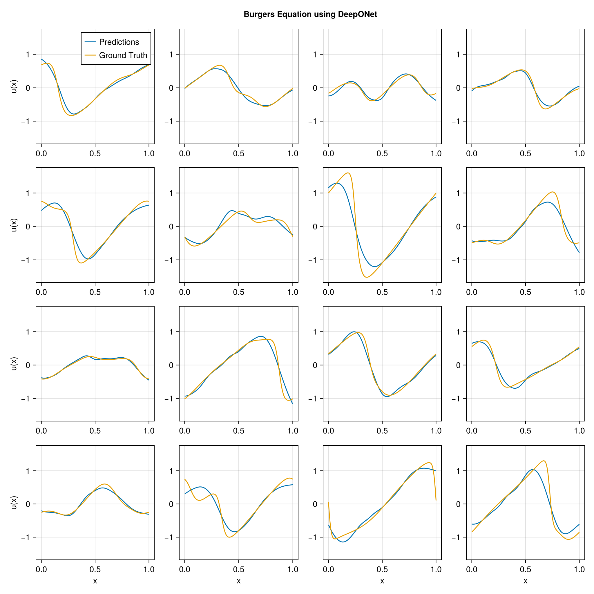

using DataDeps, MAT, MLUtils
using PythonCall, CondaPkg # For `gdown`
using Printf
const gdown = pyimport("gdown")
register(
DataDep(
"Burgers",
"""
Burgers' equation dataset from
[fourier_neural_operator](https://github.com/zongyi-li/fourier_neural_operator)
mapping between initial conditions to the solutions at the last point of time \
evolution in some function space.
u(x,0) -> u(x, time_end):
* `a`: initial conditions u(x,0)
* `u`: solutions u(x,t_end)
""",
"https://drive.google.com/uc?id=16a8od4vidbiNR3WtaBPCSZ0T3moxjhYe",
"9cbbe5070556c777b1ba3bacd49da5c36ea8ed138ba51b6ee76a24b971066ecd";
fetch_method=(url, local_dir) -> begin
pyconvert(String, gdown.download(url, joinpath(local_dir, "Burgers_R10.zip")))
end,
post_fetch_method=unpack
)
)
filepath = joinpath(datadep"Burgers", "burgers_data_R10.mat")
const N = 2048
const Δsamples = 2^3
const grid_size = div(2^13, Δsamples)
const T = Float32
file = matopen(filepath)
x_data = reshape(T.(collect(read(file, "a")[1:N, 1:Δsamples:end])), N, :, 1)
y_data = reshape(T.(collect(read(file, "u")[1:N, 1:Δsamples:end])), N, :, 1)
close(file)
x_data = permutedims(x_data, (2, 1, 3))
grid = reshape(T.(collect(range(0, 1; length=grid_size)')), :, grid_size, 1)
1×1024×1 Array{Float32, 3}:
[:, :, 1] =
0.0 0.000977517 0.00195503 … 0.997067 0.998045 0.999022 1.0
using Lux, NeuralOperators, Optimisers, Zygote, Random
using LuxCUDA
const cdev = cpu_device()
const gdev = gpu_device()
deeponet = DeepONet(;
branch=(size(x_data, 1), ntuple(Returns(32), 5)...),
trunk=(size(grid, 1), ntuple(Returns(32), 5)...),
branch_activation=tanh,
trunk_activation=tanh
)
ps, st = Lux.setup(Random.default_rng(), deeponet) |> gdev;
((branch = (layer_1 = (weight = Float32[0.022873761 -0.068828404 … 0.043993976 -0.032930005; 0.016787058 -0.08338174 … -0.019435346 0.034217365; … ; -0.06930295 0.0828761 … -0.08631624 0.03314558; -0.010702206 0.055153634 … -0.036937468 -0.018210338], bias = Float32[-0.027573671, 0.0010738149, -0.012094531, -0.011165153, 0.03041777, -0.01381636, -0.008848704, 0.017492913, -0.024606392, 0.021734167 … -0.002663508, -0.026274785, -0.007858321, 0.0027445331, -0.018122777, 0.017743424, -0.019603651, -0.021232605, 0.022672333, 0.0054248422]), layer_2 = (weight = Float32[-0.46817434 0.36149722 … -0.17898872 -0.3376669; 0.41027683 0.04088246 … 0.03195383 0.20819232; … ; -0.13954407 -0.05617892 … 0.18820035 0.208259; -0.43076897 -0.15369935 … -0.29521084 0.5065911], bias = Float32[-0.022542726, 0.027356403, -0.17253578, -0.06900278, 0.041641, -0.052172657, -0.12400083, 0.16697872, 0.035645317, 0.12833202 … 0.13793884, 0.13874921, -0.1194252, -0.13915421, 0.016243858, -0.057666287, -0.017772399, -0.10979994, -0.036349233, 0.12233445]), layer_3 = (weight = Float32[-0.357074 -0.2279471 … -0.477898 0.48348; 0.47655797 -0.15991838 … -0.42955485 -0.27632338; … ; -0.25212595 0.12636967 … -0.29124698 0.38880968; -0.431383 -0.28953683 … -0.20949039 0.13202606], bias = Float32[-0.054272432, 0.0588154, -0.15086357, -0.12364528, -0.16923039, -0.047210496, 0.03532793, 0.115304634, 0.16672729, -0.15758222 … -0.10183012, -0.17302842, -0.008391564, 0.1660559, 0.053885464, 0.019568445, -0.010682498, 0.100423045, 0.15692559, 0.08717037]), layer_4 = (weight = Float32[0.30177683 -0.31359333 … -0.21015945 -0.35160986; -0.46217093 -0.44969475 … 0.24145974 -0.44562748; … ; 0.36793178 0.021998331 … 0.12638652 0.22126415; -0.24328232 -0.4285365 … 0.3166821 -0.016239747], bias = Float32[-0.03114258, 0.07761599, -0.008380058, 0.04967044, -0.15895231, 0.13823842, -0.1154587, -0.13059518, 0.10125469, 0.16937466 … -0.16526102, -0.07264001, -0.041783605, -0.07186309, -0.065592214, -0.15179236, 0.019269118, -0.14899176, 0.13353305, -0.03891722]), layer_5 = (weight = Float32[-0.48744556 0.13911842 … 0.24882044 -0.3319529; 0.00804155 0.24148262 … 0.16498303 -0.45403227; … ; -0.40475622 0.14509673 … -0.3067342 0.20705839; -0.19756097 0.13605142 … -0.45236543 -0.34778896], bias = Float32[0.087264754, 0.08471721, -0.017922567, -0.017113432, -0.003014132, -0.048788622, 0.08384028, -0.14488375, -0.15583006, 0.17236987 … 0.09560566, 0.14319085, 0.02850069, -0.16848321, 0.17578018, 0.020958364, -0.07089388, -0.1661325, -0.080756836, 0.08226671])), trunk = (layer_1 = (weight = Float32[2.8277643; 2.4667995; … ; -1.2702626; 0.52870965;;], bias = Float32[0.8186531, -0.32326865, -0.6992707, -0.19288075, 0.92713857, 0.45914936, 0.3603859, -0.17509568, 0.27775025, -0.9420327 … 0.31096196, 0.7540239, -0.112021804, -0.6475283, -0.10949266, 0.8419745, 0.18099916, 0.8895067, 0.93653834, -0.08450365]), layer_2 = (weight = Float32[0.40533352 0.12168815 … 0.20201083 -0.19984302; -0.24871866 0.06322158 … -0.3650355 -0.11701235; … ; 0.34416887 -0.19932885 … 0.14310132 -0.08160645; 0.17465146 -0.28402498 … -0.3995182 0.09599302], bias = Float32[-0.09158649, -0.097247615, 0.13975747, -0.07336125, -0.12861525, 0.06022521, -0.044847388, 0.15579014, -0.10753387, -0.00088179635 … 0.11462322, 0.1560171, -0.033403862, 0.101449385, 0.010880335, -0.1205194, -0.12758218, -0.031512525, -0.11556729, -0.15760288]), layer_3 = (weight = Float32[0.45294195 -0.094460435 … -0.3045195 -0.3284919; 0.18508494 0.053081997 … 0.34391615 -0.19532458; … ; -0.45918372 -0.27893108 … 0.43270573 -0.006077898; -0.43821022 0.36231604 … -0.040348217 0.3170989], bias = Float32[-0.1442196, 0.024496717, 0.14593089, -0.068595305, -0.050579254, -0.12291583, 0.03098373, -0.026612574, 0.014026577, 0.008275576 … 0.12917379, -0.11196528, 0.053956524, -0.0066202586, 0.034123227, 0.13865967, -0.100746945, -0.0791608, -0.061710153, -0.034969155]), layer_4 = (weight = Float32[0.49021247 0.50363797 … 0.28705558 0.48122582; 0.47194982 -0.29108286 … 0.39848906 0.47802225; … ; -0.40152162 0.14052483 … -0.2547468 -0.012546775; 0.030466385 0.34401393 … 0.03369921 0.05750339], bias = Float32[0.16468439, 0.08980838, 0.09129452, -0.0028481998, 0.09749335, -0.027042957, 0.105028346, -0.057628438, 0.15280434, 0.079490766 … 0.004214116, 0.07567452, 0.07628902, 0.17535502, 0.109198965, 0.034661464, -0.08621913, 0.029817715, -0.0912687, -0.020673176]), layer_5 = (weight = Float32[-0.10728935 0.021940477 … -0.50281096 -0.17184648; 0.38164943 0.3844262 … -0.344135 -0.26596612; … ; 0.15675412 -0.4203822 … 0.4024053 -0.35688797; -0.17069277 0.240325 … 0.17104122 0.026559096], bias = Float32[-0.1531849, 0.13578783, 0.13616824, -0.120876506, 0.17589024, -0.16685691, -0.046628725, 0.052686762, 0.031662777, 0.09532987 … 0.16585541, 0.021326222, 0.07728099, 0.047768164, -0.14504555, 0.12573747, -0.08327543, 0.009730949, 0.13730402, -0.14863989])), additional = NamedTuple()), (branch = (layer_1 = NamedTuple(), layer_2 = NamedTuple(), layer_3 = NamedTuple(), layer_4 = NamedTuple(), layer_5 = NamedTuple()), trunk = (layer_1 = NamedTuple(), layer_2 = NamedTuple(), layer_3 = NamedTuple(), layer_4 = NamedTuple(), layer_5 = NamedTuple()), additional = NamedTuple()))
x_data_dev = x_data |> gdev
y_data_dev = y_data |> gdev
grid_dev = grid |> gdev
function loss_function(model, ps, st, ((v, y), u))
û, stₙ = model((v, y), ps, st)
return MAELoss()(û, u), stₙ, (;)
end
function train_model!(model, ps, st, data; epochs=5000)
train_state = Training.TrainState(model, ps, st, Adam(0.0001f0))
for epoch in 1:epochs
_, loss, _, train_state = Training.single_train_step!(
AutoZygote(), loss_function, data, train_state)
if epoch % 25 == 1 || epoch == epochs
@printf("Epoch %d: loss = %.6e\n", epoch, loss)
end
end
return train_state.parameters, train_state.states
end
ps_trained, st_trained = train_model!(
deeponet, ps, st, ((x_data_dev, grid_dev), y_data_dev))
((branch = (layer_1 = (weight = Float32[0.030211417 -0.061571445 … 0.051458452 -0.025523253; 0.013457245 -0.086773306 … -0.022645527 0.030947905; … ; -0.07449049 0.07812638 … -0.092360325 0.027526477; -0.005730657 0.060138974 … -0.032012276 -0.01325868], bias = Float32[-0.055096325, -0.06981324, -0.023308678, 0.027238006, 0.1280262, 0.0694926, 0.02918872, -0.043651536, 0.028678706, -0.18804581 … -0.02593285, -0.032803733, -0.016298717, -0.02911232, 0.02993232, -0.098547354, 0.0017903675, -0.085700415, 0.040782932, -0.035376217]), layer_2 = (weight = Float32[-0.47243026 0.33005202 … -0.20292817 -0.3222009; 0.38520646 0.046353243 … 0.025179729 0.19665049; … ; -0.13103531 -0.041712407 … 0.19516487 0.17464143; -0.4155372 -0.16984017 … -0.28696528 0.4886907], bias = Float32[-0.07375781, 0.033957396, -0.1822639, -0.042154554, -0.004814947, -0.087181725, -0.1519342, 0.1607363, 0.03351449, 0.109463796 … 0.1817909, 0.22155926, -0.21847525, -0.021150121, 0.0056749308, -0.13331334, -0.09138279, -0.16694073, -0.009590929, 0.19329038]), layer_3 = (weight = Float32[-0.35913765 -0.2541518 … -0.50742155 0.46359628; 0.4659058 -0.14018328 … -0.4365544 -0.25010392; … ; -0.23564042 0.13637795 … -0.27707523 0.4210975; -0.43369025 -0.2904796 … -0.20284194 0.10049232], bias = Float32[-0.037762932, 0.045253232, -0.24382369, -0.11008716, -0.17707133, -0.12331302, 0.049398694, 0.09603172, 0.17146216, -0.16472654 … -0.16904604, -0.12939633, -0.00032901648, 0.33227912, 0.023538774, 0.009996228, -0.04947754, 0.17443386, 0.17034976, 0.11988896]), layer_4 = (weight = Float32[0.33489016 -0.3503911 … -0.20584564 -0.31095886; -0.4723351 -0.46385193 … 0.24125908 -0.43295455; … ; 0.37153605 0.014215109 … 0.1156441 0.23063129; -0.2611235 -0.3635878 … 0.35149863 0.008026756], bias = Float32[-0.009268688, 0.08399225, 0.04328007, 0.09220465, -0.1897479, 0.16302814, -0.09771538, -0.15113631, 0.17342372, 0.23740299 … -0.13640904, -0.023817882, -0.064569734, -0.20631361, -0.09192435, -0.11018425, -0.053689815, -0.14284165, 0.10345118, -0.08388877]), layer_5 = (weight = Float32[-0.5378987 0.13662255 … 0.24998522 -0.34180754; -0.02944026 0.23325531 … 0.14965482 -0.46570048; … ; -0.37756488 0.16472413 … -0.2867013 0.12630053; -0.3058683 0.13623853 … -0.36906898 -0.3090412], bias = Float32[0.082904175, 0.06725751, -0.0036648004, -0.0019921986, 0.011888275, -0.040534426, 0.052629262, -0.11802342, -0.16391052, 0.209951 … 0.12046499, 0.046577796, 0.06960837, -0.16685629, 0.18253641, -0.0016628045, -0.07221451, -0.14763348, -0.093633935, 0.046980195])), trunk = (layer_1 = (weight = Float32[2.9192505; 2.453624; … ; -1.3246893; 0.54835236;;], bias = Float32[0.7878979, -0.36350924, -0.74051917, -0.20414053, 0.8778152, 0.4397363, 0.43908602, -0.14759932, 0.28616863, -0.92915845 … 0.31740394, 0.7572244, -0.1177586, -0.6503893, -0.09559042, 0.88159496, 0.21030773, 0.93886966, 0.9656447, -0.082854696]), layer_2 = (weight = Float32[0.4101454 0.12906983 … 0.22958986 -0.2062272; -0.23492216 0.038356043 … -0.346533 -0.11269516; … ; 0.35000813 -0.1939432 … 0.12740831 -0.07013786; 0.17824279 -0.2846789 … -0.36986446 0.06560405], bias = Float32[-0.08848069, -0.06609947, 0.11840543, -0.07059367, -0.10198214, 0.07906816, -0.044930376, 0.19826399, -0.08573027, -0.013918192 … 0.101269625, 0.15421289, -0.040527318, 0.12132057, 0.010431343, -0.100297734, -0.11579957, -0.014648896, -0.110359415, -0.16798912]), layer_3 = (weight = Float32[0.49868822 -0.09579279 … -0.32717514 -0.3289674; 0.19683704 0.021324843 … 0.3423149 -0.21332502; … ; -0.46594775 -0.27524263 … 0.44182777 -0.008285133; -0.44268286 0.3825404 … -0.042310078 0.33072942], bias = Float32[-0.14373218, 0.041179467, 0.13863942, -0.07420839, -0.057908494, -0.12807018, 0.0323442, -0.0138387, 0.018341629, 0.019092597 … 0.07611333, -0.09983788, 0.064863816, -0.0074879373, 0.033715006, 0.13982217, -0.09178528, -0.065538965, -0.059106395, -0.047767736]), layer_4 = (weight = Float32[0.45204923 0.48089275 … 0.29365695 0.44964752; 0.5113171 -0.2796906 … 0.4053208 0.50916624; … ; -0.4143059 0.12120596 … -0.2780466 -0.025524579; 0.047247536 0.34762144 … 0.033150766 0.09077693], bias = Float32[0.180133, 0.07828114, 0.092052996, -0.019998256, 0.095662996, -0.03930128, 0.090294614, -0.069905296, 0.14783189, 0.089376174 … -0.008596464, 0.07636568, 0.06512891, 0.20155972, 0.109789856, 0.04646379, -0.082721956, 0.014390086, -0.07286691, -0.022320043]), layer_5 = (weight = Float32[-0.11844993 0.011396743 … -0.48766473 -0.1847807; 0.3197504 0.37984422 … -0.40206003 -0.2991354; … ; 0.14659645 -0.42660233 … 0.4071262 -0.36481112; -0.13698004 0.26799998 … 0.1174041 -0.03183326], bias = Float32[-0.14414357, 0.12924671, 0.1261239, -0.13289706, 0.17536929, -0.16420883, -0.05670001, 0.058705635, 0.047806505, 0.09789698 … 0.17579691, 0.034354225, 0.06863139, 0.04033906, -0.1476468, 0.12630112, -0.06210424, -0.002501934, 0.13799062, -0.09877684])), additional = NamedTuple()), (branch = (layer_1 = NamedTuple(), layer_2 = NamedTuple(), layer_3 = NamedTuple(), layer_4 = NamedTuple(), layer_5 = NamedTuple()), trunk = (layer_1 = NamedTuple(), layer_2 = NamedTuple(), layer_3 = NamedTuple(), layer_4 = NamedTuple(), layer_5 = NamedTuple())))
using CairoMakie
pred = first(deeponet((x_data_dev, grid_dev), ps_trained, st_trained)) |> cdev
begin
fig = Figure(; size=(1024, 1024))
axs = [Axis(fig[i, j]) for i in 1:4, j in 1:4]
for i in 1:4, j in 1:4
idx = i + (j - 1) * 4
ax = axs[i, j]
l1 = lines!(ax, vec(grid), pred[idx, :, 1])
l2 = lines!(ax, vec(grid), y_data[idx, :, 1])
i == 4 && (ax.xlabel = "x")
j == 1 && (ax.ylabel = "u(x)")
if i == 1 && j == 1
axislegend(ax, [l1, l2], ["Predictions", "Ground Truth"])
end
end
linkaxes!(axs...)
fig[0, :] = Label(fig, "Burgers Equation using DeepONet"; tellwidth=false, font=:bold)
fig
end
